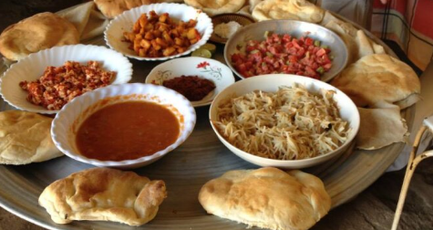
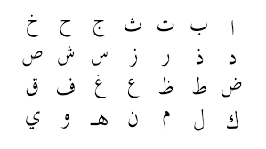

Sudanese dishes often feature bread, stew, and porridge.
The bread is called Kissra, and its base is durra or corn.
On January 1st the Sudanese celebrate independence day, and on April 6th Revolution Day.
The latter celebrates the 2019 overthrow of the president, and the former when Britain and Egypt recognized Sudan as an independent country.
Some celebrate Christian holidays, and other muslim.
Arabic is the official language of Sudan, but there are over 100 languages spoken.
Marriages are often arranged between cousins or people within the same tribe.
They don’t necessarily have to meet before the wedding.
After a year or so of living with the wife’s family, the couple will often move somewhere close to the rest of the extended family.

